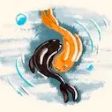
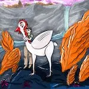
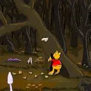

2020
Décembre
- 07 (édité) — Conrad
- 07 (édité) — Thémmé
- 07 (édité) — Martha
- 07 (édité) — Johana
- 07 (édité) — Arletty
- 07 (édité) — Anne-Lys
- 07 (édité) — Rena
- 06 — Les dents de Chastel
- 01 — Maryline trompe la mort de Diatomée
- 01 — Relecture de mon roman Objectif petit ami
Novembre
- 30 — Extrabêtes de Diatomée
- 29 — La structure dramaturgique de Samare
- 28 — Nos Nuits de Diatomée
- 27 — Ailleurs de Diatomée
-
25 —
Relecture des aventures de Megumi


-
16 —
 Le Silmarillion de J.R.R. Tolkien
Le Silmarillion de J.R.R. Tolkien
- 07 — Armée ou défense civile non-violente
- 05 — Mais moi je vous aimais de Gilbert Cesbron
- 02 — Des friches et des chiffres de Odette Laplaze-Estorgues
-
01 —
Inktober 2020
